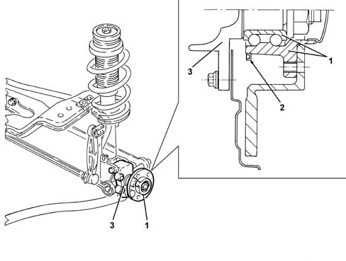

4450D rear wheel hubs
- Path
- Descriptions > 44 SUSPENSION AND WHEELS > 4450 WHEELS AND HUBS > 4450D rear wheel hubs
- Kind
- system description
- Applies to
- engines: 1.6 TS, 2.0 TS; all production periods
- Interactive page
- https://sloeber94.github.io/elrnDB-a147/en/#/3022511
Applies to: engines: 1.6 TS, 2.0 TS; all production periods
SPECIFICATIONS:
VIEW OF ASSEMBLY

1 - Hub 2 - Multi-pole magnetic ring 3 - Suspension stub axle pin
CONSTRUCTION FEATURES
The rear wheel hubs consist of an outer wheel fixing flange and a wheel bearing. The hubs are attached to the suspension stub axle pins by nuts with a safety crown. The outer flange also acts as an outer cage for the bearing. A multi-pole magnetic ring is fitted to the hub's outer flange. Its function is to indicate wheel movement to the active sensor of the ABS 3340 A(B.S. ANTI-LOCK BRAKING SYSTEM .).